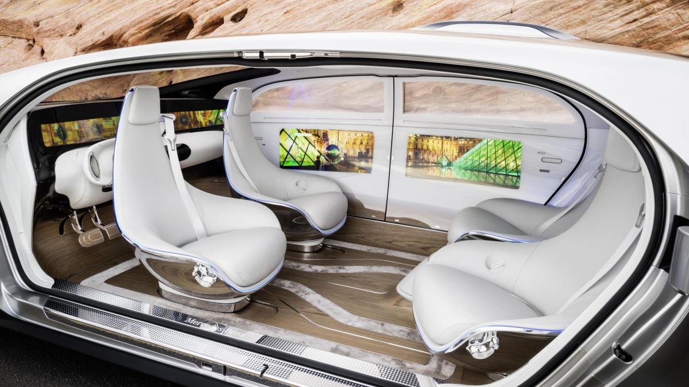

Computing in Vehicles

Your car has more computing power than the system that guided Apollo astronauts to the moon
Each year, cars are developed to have more and more computing power - electric windows which can be raised and lowered by pressing a button or switch, electronic parking brakes which are applied automatically when the vehicle is switched off, an automatic gear shift, airbags and many more features.
Cars today might have as many as 50 microprocessors on them. Reasons for that are among other things the need for sophisticated engine controls to meet emissions and fuel-economy standards as well as new safety, comfort and convenience features. Some of these features are worth looking into in more detail as they are ubiquitous and make driving even more fun.
Navigation
An automotive navigation system is often installed as part of the automobile controls. Using satellites to determine the position of the vehicle and geographic data (i.e. topological or street maps) the navigation system is then able to calculate the route. Mathematically, automotive navigation is based on the shortest path problem, which examines how to identify the path that best meets some criteria (shortest, cheapest, fastest, etc.) between two points in a large network. On the fly traffic information can be used to adjust the route. Depending on the (to the system) provided map, it can also locate points of interest such as fuel stations, restaurants, parking spaces and shopping centres.
The technologies used in automotive navigation has been available for many years. These have been costly or inaccecible though. With improvements in batteries, displays and processing power the product became commercially viable. In 1981 Honda was the first to install a navigation system in a car, the so called Electro Gyrocator. Only six years later Toyota poduced the first navigation systems based on a CD-ROM.
It is a great technologie, but one should not only rely on it as there are risks to it. Since automotive navigation systems are widely installed in cars, the numbers of wrong-way drivers in areas of construction sites on motorways has increased: the system might request the driver to turn as the alternative route around the construction site is not known to the system. Another safety hazard exists in ferries, which can be falsely interpreted as continuous roadway. This led to a series of accidents of people driving into the river by unclear sight, not reading the street signs.
Automatic parking

There are plenty of surveys about gender related parking skills. Automatic parking might set an end to this discussion as it is an autonomous car-maneuvering system that moves a vehicle from a traffic lane into a parking spot to perform parallel, perpendicular, or angle parking. First on the market in the mid 1990s the system uses four-wheel steering and different sensors and/or camaras to measure the size of the parking space or the distance from the roadside. Hereby the sensores can work both as receivers and transmitters to determine the position of obstacles. There are all different levels of automation when talking about automatic parking. Some systems are just 'parking assistants' that have sensors at front and rear beeping in different frequencies dependign on the difference of the obstacle. More advanced systems use cameras (Omniview) to assist the driver in the parking progress. Usually the cameras anticipate the place of parking corrolated to the angle of the steering wheel. Fully automatic parking takes control of steering wheel, brakes and accalerator and does the parking process all by itself. In order to work the fully automatic parking system it is though required to place the car in the correct position to be parked.
Cruise control
Cruise control is an electronic system that automatically regulates a car's speed without the driver having to keep their foot on the accelerator. It's history can be traced back as far as the 17th century when speed control was used in steam engines. Later, these mechanical systems were adapted by automobile makers. THe first 'modern' version of cruise control was installed in an 1958 Imperial (Chrysler's luxury car) and called 'Auto-Pilot'. Cruise control then became popular in the US as the nation is fond of automatic gearboxes, long travelling distances and relatively straight and wide highways.

There are four types of cruise control on offer, ranging from the most basic speed limiter to systems that can negotiate stop-start traffic and even change lanes. The speed limiter is usually hard-wired to the vehicle to limit it's top speed. But there are also driver_activated systems. When you reach your set maximum speed, the car will simply stop accelerating. As an advantage, the speed limiter helps sticking to the limits (ie a 70mph limit in vans) and saves fuel. However, the driver has to continue using the throttle to maintain speed. Cruise Control is a more advanced version and a fairly common feature on new cars. You can set a desired speed and the car will (de)accelerate itself until it has reached the set speed and then maintain it. It is also more fuel efficient than using the accalerator manually, but as the traffic slows, the driver has to take over.Adaptive Cruise Control (ACC) is able to adjust speed according to traffic and hence takes strain out of long drives. Usually the sensors work on laser basis and measure the distance to the car in front. The latest hightech cruise control system is called Semi-autonomous cruise control and is one step closer to the fully autonomous self-driving car (Level 2). The system can regulate and control speed, brakes and steering. So it can also switch lanes given the according input (flick of an idicator). The systems depends very much on it's sensors, so they have to be kept clear in order for it to work. Semi-autonomous cruise control can be found on i.e. Audi A3/A8/Q7 or the BMW 7 series, the Mercedes S-Class and Volvo XC90.
Autonomous driving
We are standing at the entrance of a new era - of highly automated driving. First tests with self-driving cars have already been taken and it's only a question of time (and politics) until they are released to the open market. There are five levels of autonomous driving, distinguishing between the degree of automation:
- Level 1: Assisted Driving: The driver is assisted by the system. There are supporting devices such as Parking Assistance or Lane Keeping Assistance, but the system does not take full control (shared control between system and driver)
- Level 2: Partly Automated Driving: The system takes control of the vehicle (such as accelerating, braking and steering), but the driver remains responsible for operating the vehicle and has to be prepared to intervene at any moment.
- Level 3: Highly Automated Driving: In certain situations, the driver can disengage from the driving for extended periods of time. As an example, the 2018 Audi A8 Luxury Sedan was the first commercial car to claim to be capable of level 3 self-driving. This particular car has a so-called Traffic Jam Pilot. When activated by the human driver, the car takes full control of all aspects of driving in slow-moving traffic at up to 60 kilometres per hour (37 mph). The function works only on highways with a physical barrier separating one stream of traffic from oncoming traffic.
- Level 4: Fully Automated Driving: The vehicle drives independently most of the time. The driver msut remain able to drive, but can i.e. take a nap. So compared to level 3 the driver can take his mind off the road in addition to his eyes.
- Level 5: Full Automation: The vehicle assumes all driving functions, the people in the vehicle are only passengers.
Sources
Introduction to the technologie within a car
Annabelle Kaiser
Studies:
Physics B. SC
Programming Preknowledge:
Some Python for drawing graphs and evaluation of data gathered in experiments but nothing else.
Why I chose to do programming:
Really useful to have some basic understanding for later (if working in an enterprise or doing research) and also lots of fun once you get the hang of it.
LinkedIn GithubPin a fixed-height footer to the bottom of the viewport in desktop browsers with this custom HTML and CSS. A fixed navbar has been added with padding-top: 60px; on the body > .container.
Back to the default sticky footer minus the navbar.